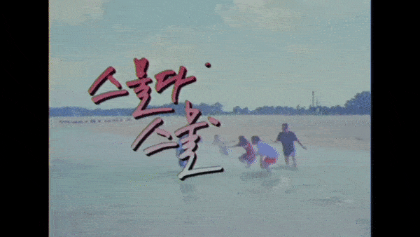
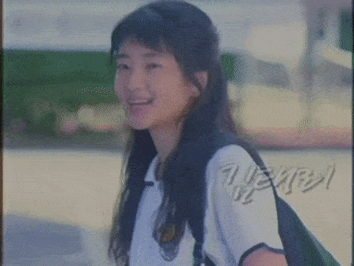
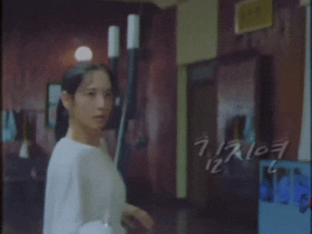
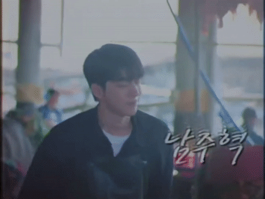
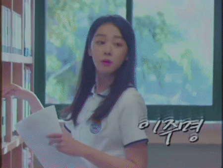
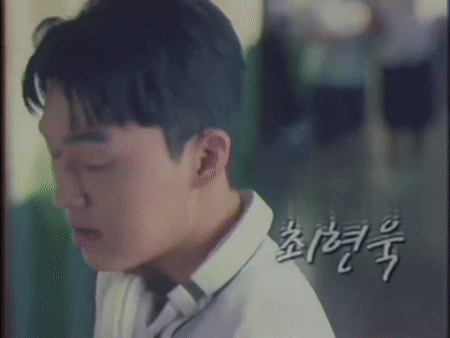

Twenty Five Twenty One (2022) follows five friends (two of whom are fencers) that strive to pursue their dreams and navigate early adulthood in the bleak aftermath of the 1997 IMF Crisis. Despite the devastating recession, they still manage to overcome adversity and experience the joys of adolescence, while picking up important lessons about love, friendship, and personal growth along the way.
main characters

na hee do (18): a fencing prodigy, who has yet to reach her fullest potential. she idolizes ko yu rim and transfers to her high school specifically to train with her.
ko yu rim (18): a high-school fencing gold medalist whom hee do idolizes, and is her greatest rival.


baek yi jin (22): a hardworking young man whose rich family went bankrupt during the IMF crisis. as such, he moves out on his own in an attempt to rebuild his life despite debt collectors knocking on his door all the time.
ji seung wan (18): the class president and moon ji woong's childhood friend. she has an anonymous radio talk show in which she raises awareness on the problems of the youth while also giving guidance to fellow students.


moon ji woong (18): hee do's classmate and the most popular boy in school. ji seung wan's childhood friend.
trailer
IMDb: 8.9/10
Google: 4.9/5
MyDramaList: 8.8/10
Google: 4.9/5
MyDramaList: 8.8/10
ost


my review
this show isn't my favorite show, but i think it's a great recommendation for first time k-drama viewers. it's got an amazing friend group, enemies to rivals to best friends, mommy issues, SPORTS (my favorite part), romance, humor, and it takes place in the 90s. to me, the actors are what appealed to me the most as i watched, as the cast is extremely talented. my favorite part of the show was the fencing matches, and i wish there was more of it alongside the friendship between the two female main characters. i've watched an amount of korean dramas that i am not proud of, and i think 2521 is one of the best out there. it even has a beach episode!
you can watch twenty five twenty one on netflix, or on the countless pirate websites.